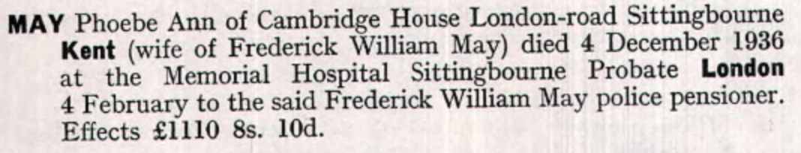

Phoebe Ann May (née Culmer) cMay 1866 - 1936
[ Home ] | [ Calendar ] | [ Surnames Index ] | [ Errors ] | [ Family History ]The child of George Culmer (an agricultural labourer) and Harriet Marten, Phoebe Culmer, the first cousin three-times-removed on the mother's side of Nigel Horne, was born in Hernhill, Kent, England c. May 18661,2,3 and baptised there at St Michael on 17 Jun 1866. She married Frederick May (a metropolitan police sergeant) in Bridge, Kent, England around May 18895.
During her life, she was living at Sheldwich Road, Preston, Faversham, Kent on 2 Apr 18711; at St Agathas Square, Shoreditch, London, England on 5 Apr 18916; at Catherine Grove, Greenwich, London on 31 Mar 19017; at Metropolitan Police Grange Road, Bermondsey, London on 2 Apr 19118; and at Cambridge House, London Road, Sittingbourne, Kent in 1936.
She died on 4 Dec 1936 in Milton, Kent, England3,4.
Parents
- George was born c. 1824
- Harriet was born c. 1826
Citations
- 1871 England, Wales & Scotland Census - Findmypast (was age 4 and the daughter of the head of the household)
- England & Wales births 1837-2006 - Findmypast
- England & Wales deaths 1837-2007 - Findmypast
- England & Wales Government Probate Death Index 1858-2019 - Findmypast
- England & Wales Marriages 1837-2005 - Findmypast
- 1891 England, Wales & Scotland Census - Findmypast (was age 24 and the wife of the head of the household)
- 1901 England, Wales & Scotland Census - Findmypast (was age 34 and the wife of the head of the household)
- 1911 Census for England & Wales - Findmypast (was age 44 and the wife of the head of the household)
Media
Phoebe Culmer - Probate

England & Wales births 1837-2006 - BMD/B/1866/2/AZ/000138/122
1871 England, Wales & Scotland Census Transcription - GBC-1871-0014216340
England & Wales marriages 1837-2005 Transcription - BMD-M-1889-2-AZ-000071-291
1891 England, Wales & Scotland Census - GBC/1891/0002156837
1901 England, Wales & Scotland Census - GBC/1901/0006461399
1911 Census for England & Wales - GBC/1911/RG14/01889/0861/2
England & Wales deaths 1837-2007 - BMD/D/1936/4/AZ/000630/057
England Births & Baptisms 1538-1975 - R_884945522
Kent Baptisms - GBPRS/CANT/B/96334295
England Births & Baptisms 1538-1975 - R_938106849
England & Wales Government Probate Death Index 1858-2019 - GBOR/GOVPROBATE/C/1937-1937/00085409
Family Tree

Map
Generated by ged2site. Last updated on Jul 3, 2024
Known Issues
Residence record for 1936 contains no citation
Listed in the residence for 2 Apr 1911, but spouse Frederick May is not
Listed in the residence for 1936, but spouse Frederick May is not
Census information missing between Census UK 1871 and Census UK 1891